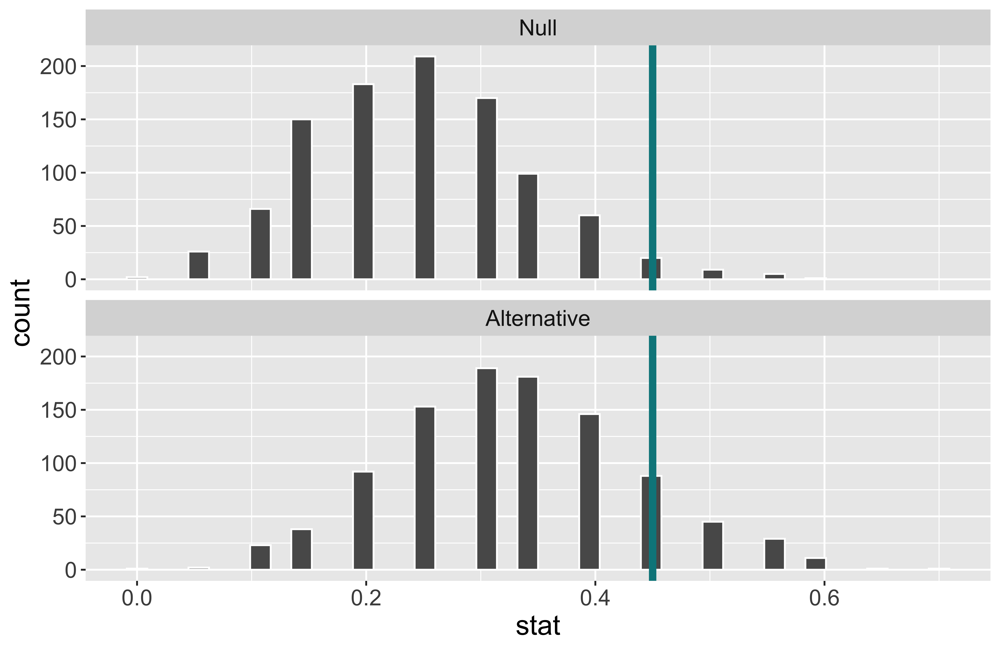
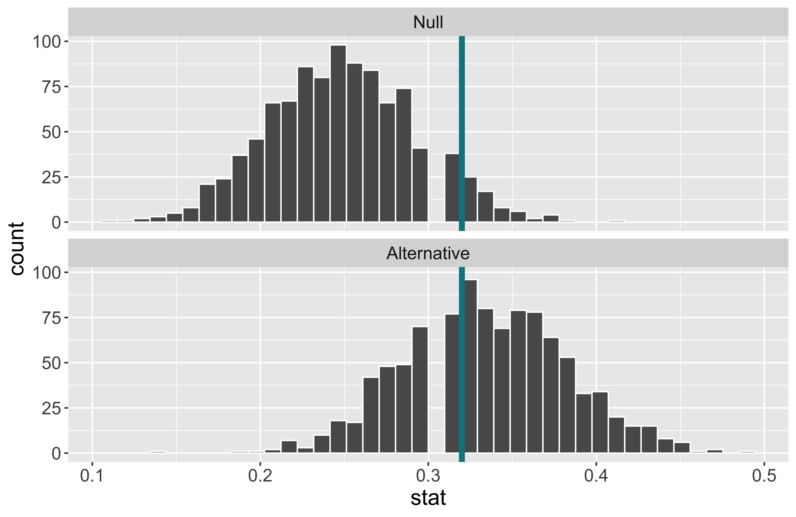
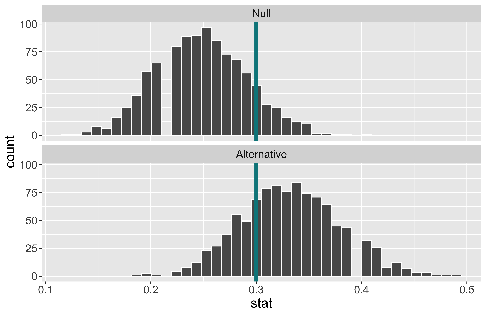
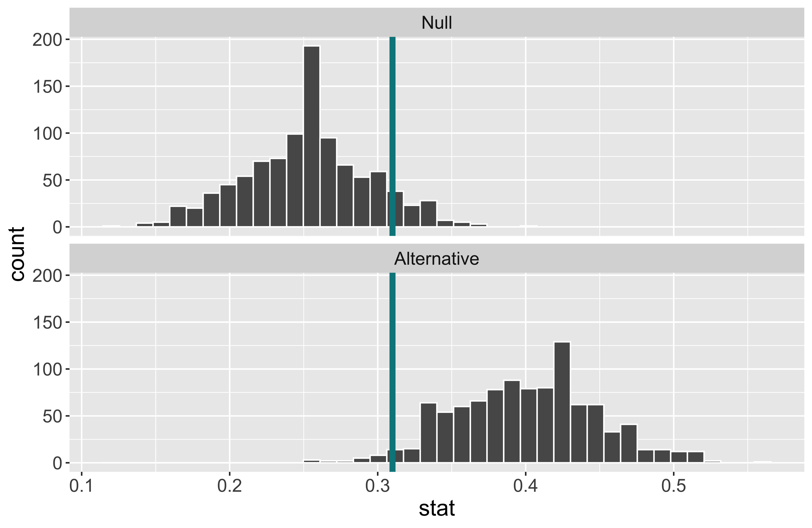
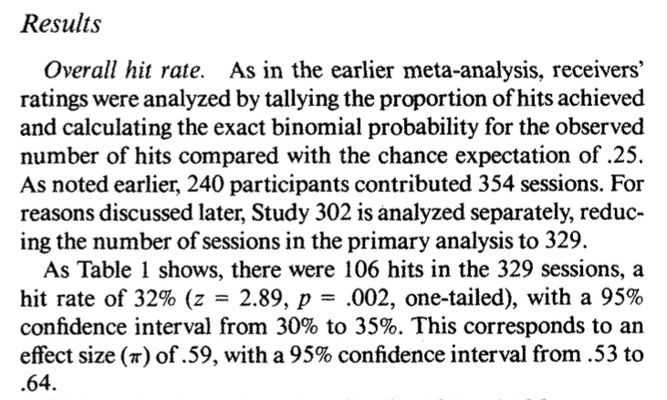
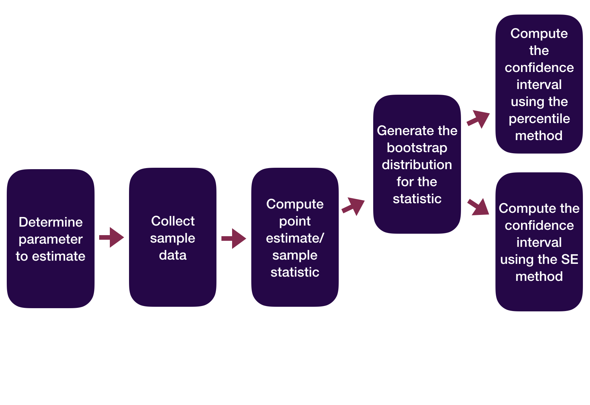
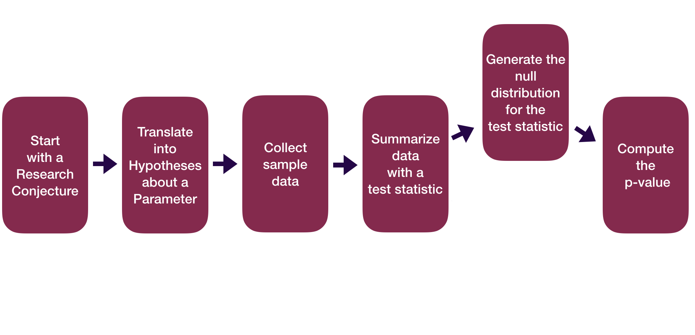
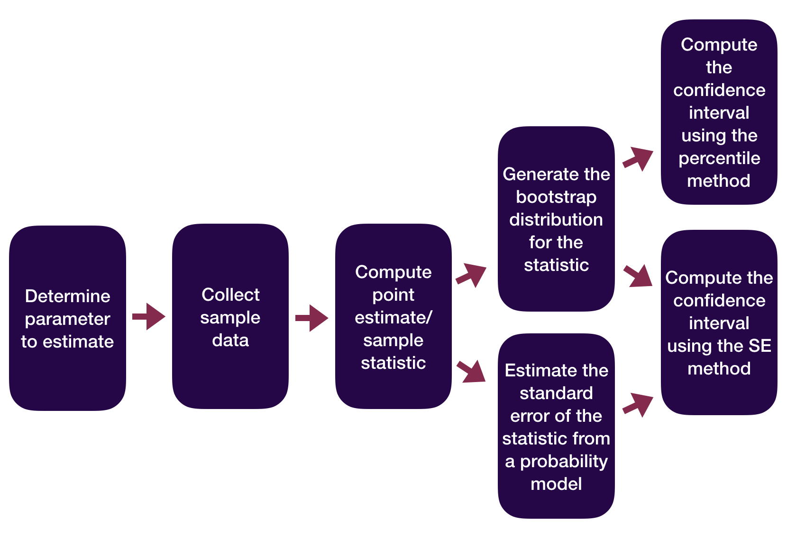
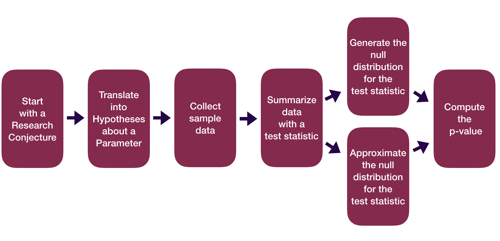

Decisions, Decisions
Kelly McConville
DATA 100
Week 10 | Spring 2026
Announcements
- 🎉 We are now accepting data science student fellow applications for DATA 100.
- About 10-12 hours of work per week.
- Primary responsibilities: Work on a collaborative, mentored data or AI project, attend relevant meetings, and participate in DCDS ambassador activities.
- About 10-12 hours of work per week.
Goals for Today
- Coding goals (DATA 100 & beyond)
- Advice on the next data science class
- Hypothesis testing example
- Decisions in a hypothesis test
- Types of errors
- The power of a hypothesis test
Now that you have discovered your love of data, what class should you take next?
That Next Data Science Class
But first… Common Question: How should I describe my post-DATA 100 coding abilities?
Potential Answer: You have learned how to write code to analyze data. This includes visualization (
ggplot2), data wrangling (dplyr), data importation (readr), modeling, inference (infer) and communication (withQuarto).Follow-up Question: So what coding is there left to learn?
Answer: Learning how to program. This includes topics such as control flow, iteration, creating functions, and vectorization. Also, learning how to use an AI tool effectively and ethically to support your code generation and how to debug AI code suggestions.
That Next Coding Class
- CSCI 187. Creative Computing & Society: Computing, Creativity & the Social Good.
- CSCI 203. Introduction to Computer Science.
- ANOP 203. Introduction to Programming for Business Analytics.
That Next Modeling Course
- STAT 217. Statistics II
- CSCI 349. Applied Machine Learning.
- ANOP 330. Predictive Analytics: Machine Learning Fundamentals for Business.
- Many of the upper-level stats courses are modeling courses (but they do have pre-reqs).
That Next Visualization Course
- STAT 230. Data Visualization & Computing
- ANOP 270. Data Visualization for Business Analytics.
Feel free to stop by office hours or send me a Slack note if you have advising questions!
Now: A closer look at the conclusions of a hypothesis test
Hypothesis Testing Framework
Set-up hypotheses:
- Be able to express in words and in terms of parameters.
Collect data.
Assume \(H_o\) is correct.
Compute a p-value to quantify the likelihood of the sample results using a test statistic.
Draw a conclusion about the alternative hypothesis.
Hypothesis Testing: Decisions, Decisions
Once you get to the end of a hypothesis test you make one of two decisions:
- P-value is small.
- Reject \(H_o\).
- I have evidence for \(H_a\).
- P-value is not small.
- Fail to reject \(H_o\).
- I don’t have evidence for \(H_a\).
Sometimes we make the correct decision. Sometimes we make a mistake.
Hypothesis Testing: Decisions, Decisions
Let’s create a table of potential outcomes.
\(\alpha\) = prob of Type I error under repeated sampling = prob reject \(H_o\) when it is true
\(\beta\) = prob of Type II error under repeated sampling = prob fail to reject \(H_o\) when \(H_a\) is true.
Hypothesis Testing: Decisions, Decisions
Typically set \(\alpha\) level beforehand.
Use \(\alpha\) to determine “small” for a p-value.
- P-value
issmall\(< \alpha\).- I have evidence for \(H_a\). Reject \(H_o\).
- P-value
isnotsmall\(\geq \alpha\).- I don’t have evidence for \(H_a\). Fail to reject \(H_o\).
Hypothesis Testing: Decisions, Decisions
Question: How do I select \(\alpha\)?
Will depend on the convention in your field.
Want a small \(\alpha\) and a small \(\beta\). But they are related.
- The smaller \(\alpha\) is the larger \(\beta\) will be.
Choose a lower \(\alpha\) (e.g., 0.01, 0.001) when the Type I error is worse and a higher \(\alpha\) (e.g., 0.1) when the Type II error is worse.
Can’t easily compute \(\beta\). Why?
One more important term:
- Power = probability reject \(H_o\) when the alternative is true.
Example
Suppose we have a baseball player who has been a 0.250 career hitter who suddenly improves to be a 0.333 hitter. He wants a raise but needs to convince his manager that he has genuinely improved. The manager offers to examine his performance in 20 at-bats.
Ho:
Ha:
When \(\alpha\) is set to \(0.05\), he needs to hit 9 or more to get a small enough p-value to reject \(H_o\).
When \(\alpha\) is set to \(0.05\), the power of this test is 0.175.
Why is the power so low?
What aspects of the test could the baseball player change to increase the power of the test?
Example
Suppose we have a baseball player who has been a 0.250 career hitter who suddenly improves to be a 0.333 hitter. He wants a raise but needs to convince his manager that he has genuinely improved. The manager offers to examine his performance in 20 100 at-bats.
What will happen to the power of the test if we increase the sample size?

Increasing the sample size increases the power.
When \(\alpha\) is set to \(0.05\) and the sample size is now 100, the power of this test is 0.56.
Example
Suppose we have a baseball player who has been a 0.250 career hitter who suddenly improves to be a 0.333 hitter. He wants a raise but needs to convince his manager that he has genuinely improved. The manager offers to examine his performance in 20 100 at-bats.
What will happen to the power of the test if we increase \(\alpha\) to 0.1?

- Increasing \(\alpha\) increases the power.
- Decreases \(\beta\).
- When \(\alpha\) is set to \(0.1\) and the sample size is 100, the power of this test is 0.71.
Example
Suppose we have a baseball player who has been a 0.250 career hitter who suddenly improves to be a 0.333 0.400 hitter. He wants a raise but needs to convince his manager that he has genuinely improved. The manager offers to examine his performance in 20 100 at-bats.
What will happen to the power of the test if he is an even better player?

Effect size: Difference between true value of the parameter and null value.
- Often standardized.
Increasing the effect size increases the power.
When \(\alpha\) is set to \(0.1\), the sample size is 100, and the true probability of hitting the ball is 0.4, the power of this test is 0.97.
Will talk about computing power later!
Thoughts on Power
What aspects of the test did the player actually have control over?
Why is it easier to set \(\alpha\) than to set \(\beta\) or power?
Considering power before collecting data is very important!
The danger of under-powered studies
- EX: Turning right at a red light
Reporting Results in Journal Articles

Statistical Inference Zoom Out – Estimation

Question: How did folks do inference before computers?
Statistical Inference Zoom Out – Testing

Question: How did folks do inference before computers?
Statistical Inference Zoom Out – Estimation

Question: How did folks do inference before computers?
Statistical Inference Zoom Out – Testing

Question: How did folks do inference before computers?
Reminders:
- 🎉 We are now accepting data science student fellow applications for DATA 100.
- About 10-12 hours of work per week.
- Primary responsibilities: Work on a collaborative, mentored data or AI project, attend relevant meetings, and participate in DCDS ambassador activities.
- About 10-12 hours of work per week.